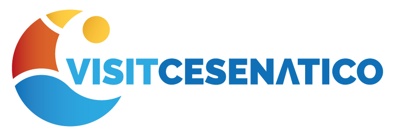

Domenica 29 novembre
Inaugurazione
Spettacolo di luci e musica per l'apertura del Presepe e il suo anniversario.

IT · EN · FR · DE · ESIl Presepe della Marineria compie 40 anni: barche storiche trasformate in una natività illuminata sul Porto Canale, con mercatini, spettacoli e festeggiamenti dal 29 novembre al 10 gennaio.
Scopri il programmaCinque appuntamenti per vivere il borgo sotto le luci delle feste.
Antiche barche da pesca del museo diventano un presepe galleggiante, con statue a grandezza naturale che raccontano la Natività tra le luci del porto.


Spettacolo di luci e musica per l'apertura del Presepe e il suo anniversario.

Una esposizione che ripercorre i 40 anni della Natività galleggiante.
Artigianato, prodotti tipici e vin brulé tra le botteghe del centro e la banchina del porto.

Prodotti alimentari, artigianato, regali e vin brulé nei tipici stand sul Porto Canale.

Oggetti fatti a mano da artigiani locali in via Baldini e via Quadrelli. Orari 9:00–19:00.
Un programma pensato per tutta la famiglia, con attività gratuite durante le feste.
Musicisti, figuranti e animazione che attraversano il centro e il porto.
Passeggiate nel borgo con lo IAT alla scoperta della storia marinara di Cesenatico.
Contatta lo IAT →
Attività creative e manuali per i più piccoli, legate alla tradizione marinara.
Storie e letture ad alta voce per bambini in età prescolare.
Tutti gli incontri →
Cantori e musicisti della tradizione romagnola chiudono le feste con canti augurali nelle piazze del centro: un appuntamento da non perdere.
Laboratori, tour e attività per scoprire il borgo anche fuori stagione.
Un laboratorio pratico per imparare la stampa a mano in una bottega del centro.

Un tour alla scoperta dei luoghi simbolo del borgo, per famiglie e curiosi.

Pedalata assistita lungo il litorale e l'entroterra, con soste tra i borghi.